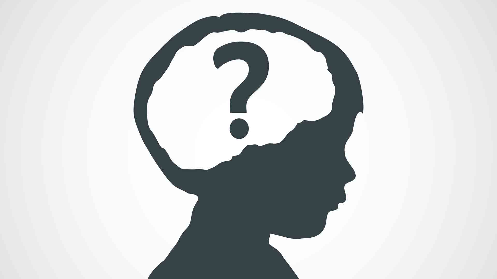
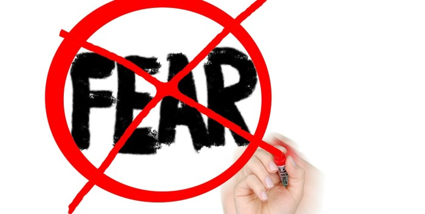
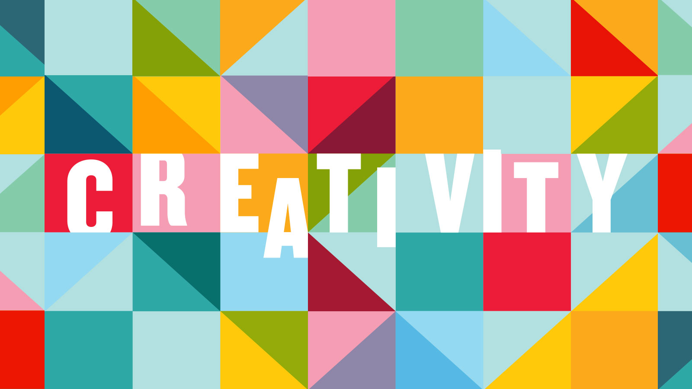

From my interview from History class I've pick a topic that I talked about in my essay
For this assignment we made a selfportrait based on a test to know about our personalities and goals for 2018
Describe how your layered self-portrait visually represents your top three strengths (from the VIA survey).
What were your top three strengths? How did you choose to visually represent these? How did you make these decisions?
Bravery, Creativity, Curiosity. I basically choose images to represent those strengths, I used too many colors to represent Creativity, Question marks to represent curiosity, and images of bravery. I made those decisions by looking the images and seeing which represents the best
Describe how your layered self-portrait visually represents the person that you want to be in 2018. What images did you choose to represent your goals? Justify the choices that you made?
Those images represent that I want to be more brave and confident with myself during 2018, for example, I’ve put the Bisexual flag to represent my bravery when I come out, and I also want to learn more about life, that’s why I put question marks, and I want to be more creative in whatever I do
Talk about the composition of your layered self-portrait. How did you resize images to indicate dominance? How did you decide which images would be more dominant?
I’ve decided that the Bisexual flag was going to be the background because it shows my proud.
Talk about the process of creating your layered self-portrait. What did you learn through the creation of this project deliverable?
I felt that I was making my goals and want to do them, I’ve learned to be patient (using photoshop) and actually it was something interesting to do What did you learn about yourself? I’ve learned to be more creative.
  